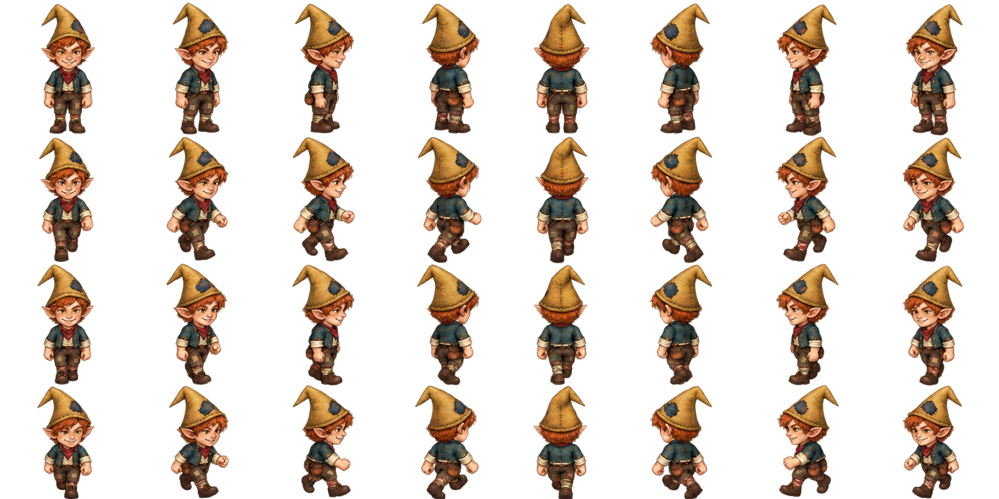
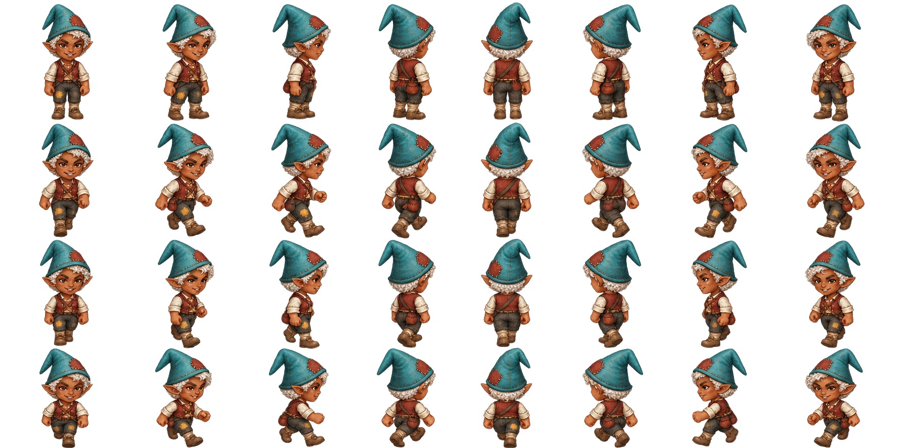
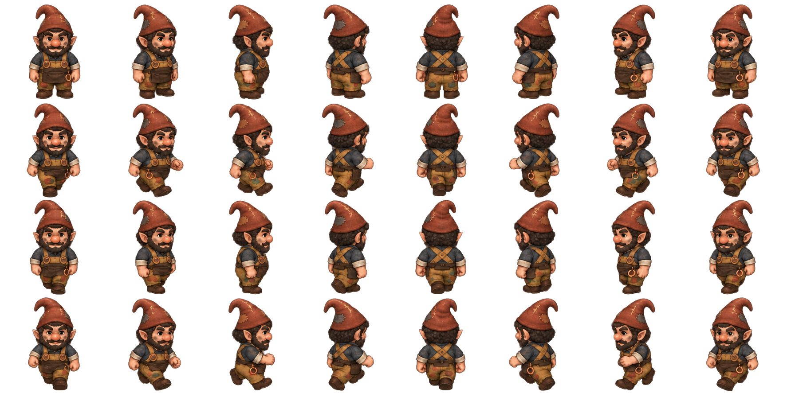
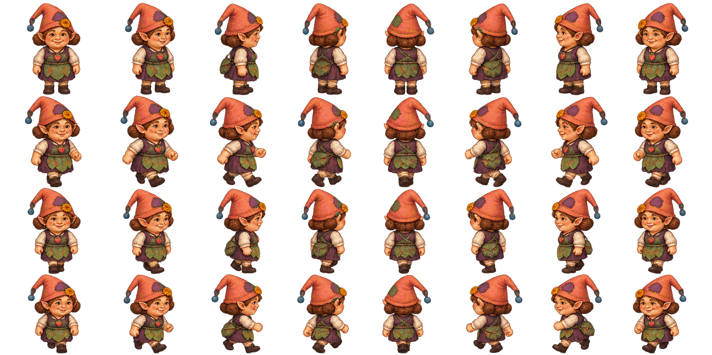
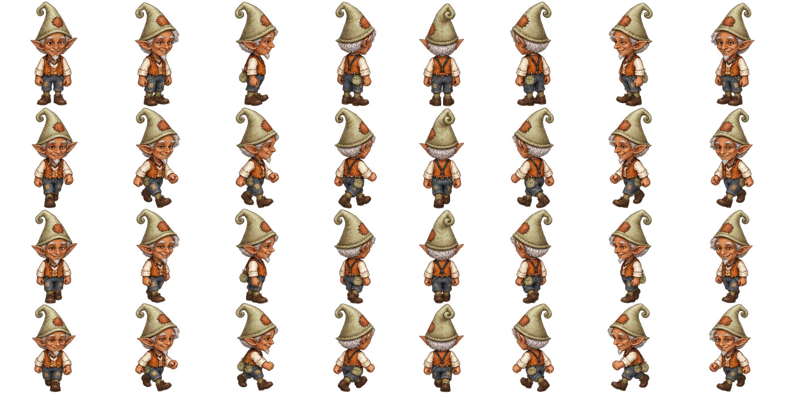
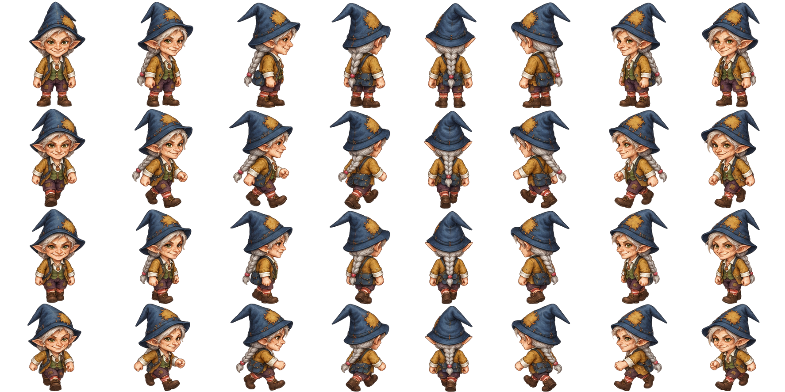
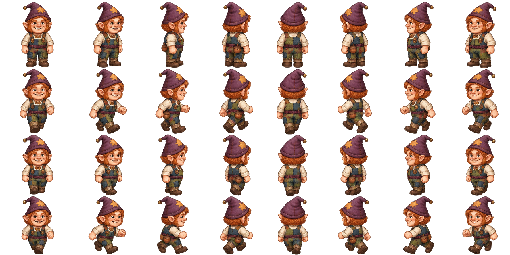
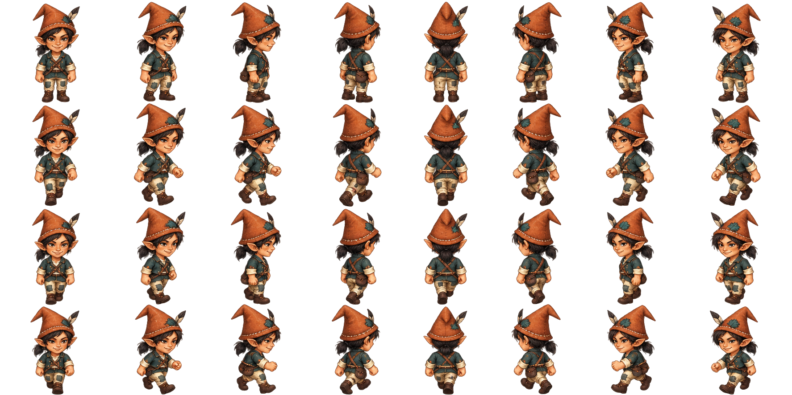
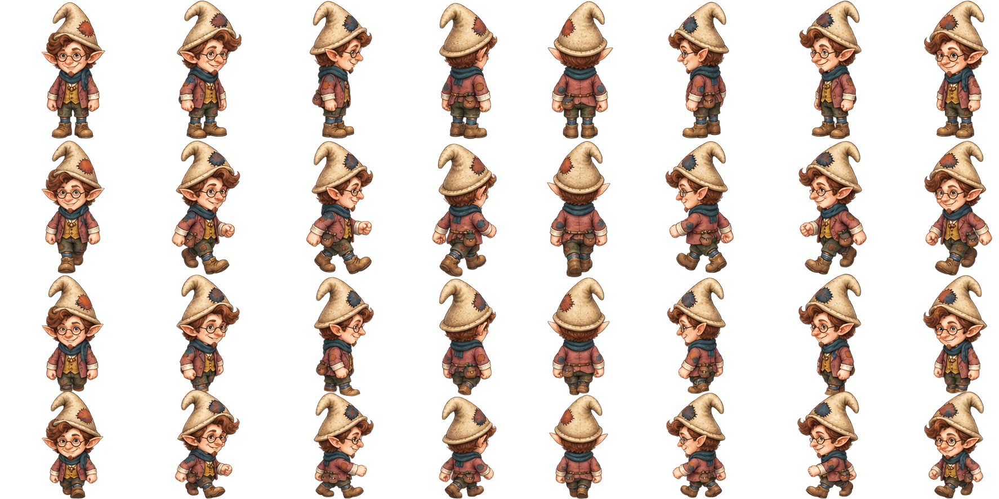
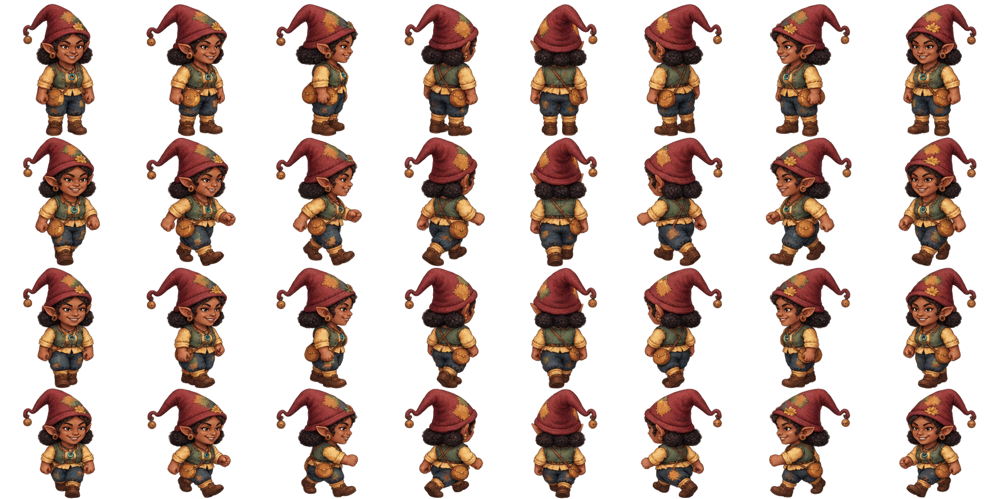

Diez nuevas caras del bosque
Candidatos 101–110. Los nombres son solo apodos de trabajo. Pulsa cada tarjeta para abrir su grid completo: ocho direcciones y cuatro filas de reposo/pasos. Ninguno está integrado ni elegido todavía como protagonista.
101 · Rizo — desplegar grid aquí

102 · Chispa — desplegar grid aquí

103 · Tizon — desplegar grid aquí

104 · Nispera — desplegar grid aquí

105 · Trebol — desplegar grid aquí

106 · Mimbrera — desplegar grid aquí

107 · Avellano — desplegar grid aquí

108 · Oria — desplegar grid aquí

109 · Silo — desplegar grid aquí

110 · Zarza — desplegar grid aquí

Arte de selección. No sustituye el registro de anclas, escala y revisión del ciclo necesarios antes de integrarlo. No se han modificado el catálogo ni las hojas de los cien residentes existentes.